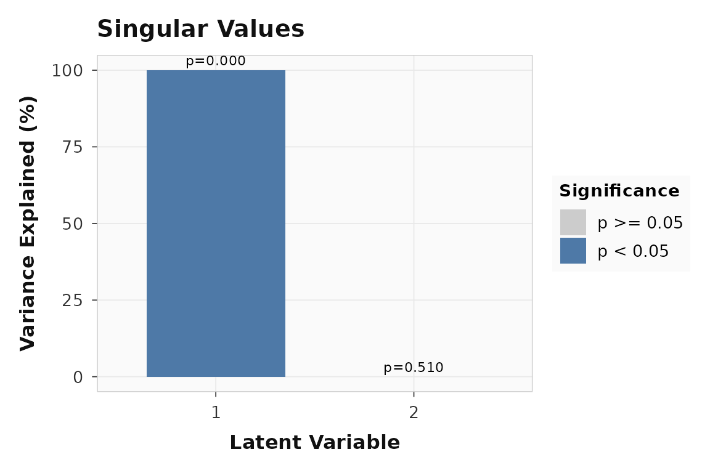
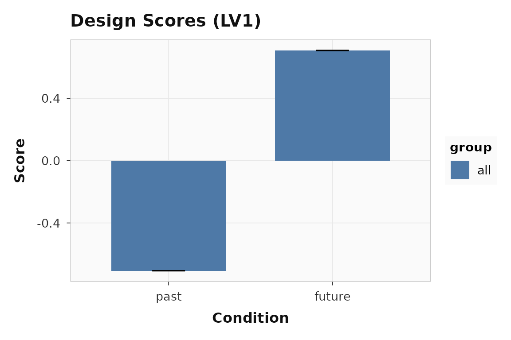
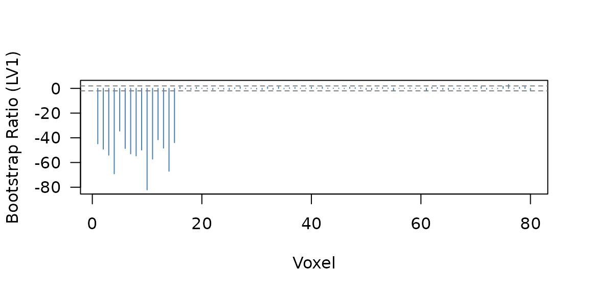

Within-subject seed PLS is for a different question than ordinary
seed_pls(). If you care about whether a seed and the rest
of the brain co-fluctuate across trials within each person, you
need trial-level data and a within-subject connectivity measure.
ws_seed_pls() builds those seed-to-voxel connectivity maps
first and only then runs task PLS on the resulting maps.
Why not just use ordinary Seed PLS?
seed_pls() works on one seed value per subject-condition
observation. It is useful when you want across-subject covariance
between seed activity and the rest of the brain.
ws_seed_pls() asks a different question: within a given
subject and condition, do the seed and voxel betas rise and fall
together from trial to trial?
This synthetic example was built so the seed has similar mean activation in the two conditions, but its trial-by-trial coupling with voxels 1-15 flips sign:
data.frame(
quantity = c(
"mean within-subject r in signal voxels (past)",
"mean within-subject r in signal voxels (future)",
"future - past difference in mean seed activation"
),
value = round(c(signal_corr[["past"]], signal_corr[["future"]], seed_cond_diff), 2)
)
#> quantity value
#> 1 mean within-subject r in signal voxels (past) 0.87
#> 2 mean within-subject r in signal voxels (future) -0.82
#> 3 future - past difference in mean seed activation 0.06That is the raison d’etre of the ws-seed workflow: connectivity differences can be strong even when the seed’s average activation is not.
What does the basic ws-seed workflow look like?
The basic workflow is:
- compute one seed-to-voxel connectivity map per subject per condition
- submit those maps to task PLS
- inspect significance, design scores, and reliable voxels
ws_result <- ws_seed_pls(
beta_lst = beta_lst,
seed_lst = seed_lst,
condition_lst = condition_lst,
num_subj_lst = n_subj,
fisher_z = FALSE,
nperm = 200,
nboot = 200,
progress = FALSE
)
stopifnot(
inherits(ws_result, "pls_result"),
inherits(ws_result, "pls_task"),
length(significance(ws_result)) >= 1L,
all(is.finite(ws_result$s))
)
cbind(
pvalue = round(significance(ws_result), 3),
variance = round(singular_values(ws_result, normalize = TRUE), 1)
)
#> pvalue variance
#> LV1 0.00 100
#> LV2 0.51 0If the planted connectivity reversal is strong, LV1 should dominate:
plot_singular_values(ws_result)
Singular values for the within-subject seed PLS example. LV1 captures the dominant condition-dependent connectivity pattern.
The design scores should show opposite contributions from
past and future:
plot_scores(ws_result, lv = 1, type = "design", plot_type = "bar")
Design scores for LV1. The two conditions pull in opposite directions, reflecting the planted sign flip in within-subject connectivity.
Which voxels contribute reliably?
ws_bsr <- bsr(ws_result, lv = 1)
reliable <- sum(abs(ws_bsr) > 2)
stopifnot(
all(is.finite(ws_bsr)),
reliable > 10L
)17 of 80 voxels pass the threshold:

Bootstrap ratio profile for LV1. Voxels 1-15 carry the planted within-subject connectivity effect.
How do multiple seeds work?
The general multiseed layout is seed_condition:
- rows =
subject × seed × condition - columns = voxels
That makes rotated and non-rotated ws-seed analyses use the same underlying representation.
data.frame(
condition_cell = multi_result$conditions,
design_row = seq_along(multi_result$conditions)
)
#> condition_cell design_row
#> 1 Precuneus:past 1
#> 2 Precuneus:future 2
#> 3 IPS:past 3
#> 4 IPS:future 4This row expansion is what makes a targeted non-rotated design meaningful: you can now test specific seed-by-condition hypotheses across explicit cells instead of hiding seeds in the feature dimension.
When would you use stacked_seed_features instead?
stacked_seed_features keeps the original task-PLS row
structure:
- rows =
subject × condition - columns =
voxel × seed
That can still be useful, but it answers a different question because the seed dimension is now part of the feature space rather than the condition space.
stacked_result <- ws_seed_pls(
beta_lst = multi_beta_lst,
seed_lst = multi_seed_lst,
condition_lst = multi_condition_lst,
num_subj_lst = n_subj,
seed_labels = c("Precuneus", "IPS"),
layout = "stacked_seed_features",
fisher_z = FALSE,
nperm = 0,
nboot = 0,
progress = FALSE
)
stopifnot(
stacked_result$num_cond == 2L,
identical(stacked_result$ws_seed_info$layout, "stacked_seed_features"),
identical(stacked_result$feature_layout$kind, "voxel_seed"),
nrow(stacked_result$u) == n_vox * 2L
)
data.frame(
property = c("num_cond", "feature layout", "features in u"),
value = c(
stacked_result$num_cond,
stacked_result$feature_layout$kind,
nrow(stacked_result$u)
)
)
#> property value
#> 1 num_cond 2
#> 2 feature layout voxel_seed
#> 3 features in u 160The general recommendation is:
- use
seed_conditionwhen seed identity should behave like an experimental cell - use
stacked_seed_featuresonly when you explicitly want the seed dimension folded into the feature space
Where to go next
| Goal | Resource |
|---|---|
| Task PLS workflow | vignette("plsrri") |
| Across-subject seed workflow | vignette("multiblock-and-seed") |
| Scripted API and CLI workflow | vignette("scripted-workflows") |
| Core helper for trial maps | ?ws_seed_correlation |
| Main wrapper | ?ws_seed_pls |
| Trial-level builder entry point | ?add_trial_data |